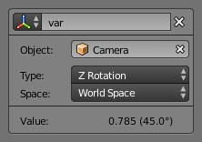
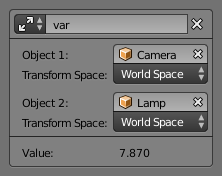

Drivers Panel¶
Reference
| Editor: | Graph editor |
|---|---|
| Mode: | Drivers |
| Panel: |
Drivers panel.
This panel is located in the Graph Editor with the mode set to Drivers.
The Drivers panel is for setting up Driver Variables or a Scripted Expression which will determine the value of the Driver Value.
Settings¶
- Update Dependencies
- This will force an update for the Driver Value dependencies.
- Remove Driver
- Removes the driver from the property.
- Type
There are two categories of scripts: built-in (average, sum, minimum and maximum) and custom scripts (Scripted Expressions).
- Average Value
- Uses the average value of the referenced Driver Variables.
- Sum Values
- Uses the sum of the referenced Driver Variables.
- Scripted Expression
- Uses a Scripted Expression. See Expression. You must write a Python expression which performs your own calculations on the Driver Variables.
- Minimum Value
- Uses the lowest value from the referenced Driver Variables.
- Maximum Value
- Uses the highest value from the referenced Driver Variables.
- Expression
- Scripted Expression. Here you can add variables, real numbers, math operators, math functions, Python properties, driver functions. See Driver Expression below for some examples.
- Use Self
- This allows for drivers to references their own data using the variable
self. Useful for objects, bones, to avoid having to create a variable pointing to its self. - Show Debug Info
- Shows the Driver Value.
- Driver Value
- The output value of the driver script.
Driver Variables¶

Transform channel setup. |

Distance setup. |
Variable are references to properties or delta transformations which are a reference to two properties.
- Add Variable
- Adds a new Driver Variable.
- Copy/Paste
- Uses the copy of the current variable stack so it can be pasted onto another object's variable stack.
- Name
- Name to use for scripted expressions/functions. No spaces or dots are allowed and must start with a letter.
- Variable Type
The type of variable to use.
- Single Property
Use the value from some RNA property. For example, the Ambient shading color from a material. (see Fig. Setup of a single property.) First select the type of ID-block, then the ID of the ID-block, then copy and paste an RNA property Ctrl-V. See also Custom Properties.
- ID Type
- The ID-block type. For example: Key, Image, Object, Material.
- ID
- The ID of the ID-block type. For example: "Material.001".
- RNA Path
- The RNA ID name of the property. For example: 'ambient' from material shading.
- Transform Channel
Use one of the Transform channels from an object or bone.
- ID
- ID of the object. For example: Cube, Armature, Camera.
- Bone
- ID of the Armature bone. For example: "Bone", "Bone.002", "Arm.r". This option is for armatures.
- Type
- For example, X Location, X Rotation, X Scale.
- Space
- World Space, Transform Space, Local Space.
- Rotational Difference
- Use the rotational difference between two objects or bones.
- Distance
- Use the distance between two objects or bones.
- Value
- Shows the value of the variable.